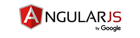
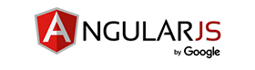
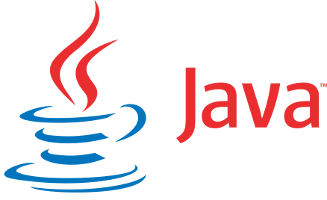
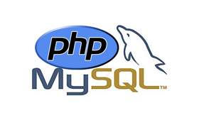
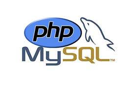

-
2017
-
2017Formation Développeur Logiciel


A l'occasion de ma reconversion, cette formation me permet d'apprendre le travail d'équipe en informatique, de conforter mes bases et d'apprendre de nouveaux frameworks.
-
2016
-
2015
-
2014Développement d'application mobile hybride
 

Avec l'envie de développer une application embarquée sur téléphone mobile, j'ai découvert Ionic, qui mélange les framework Angular et cordova (phonegap).
-
2012Responsive design
A l'occasion d'un projet commun, un ami m'a fait découvrir Jquery ainsi que les requêtes ajax, la voie vers des applications modernes s'ouvrait devant moi. J'ai enchainé sur le framework bootstrap et la production "mobile first", pour des sites web s'adaptant aux différentes plateformes de navigation.
-
2011Langage Java

Un incontournable. Dans le cadre d'un projet d'applet java, je me suis tourné vers ce langage afin d'intégrer de l'interactivité à un site web personnel. Hélas les codes sources sont perdus...
-
2010Ingénieur agronome
Diplômé en 2010, école Montpellier Supagro.
-
2004
-
2004Langage C / C++Avec l'envie de comprendre plus en détail le fonctionnement d'un langage de programmation, je me suis tourné vers le C où j'ai pris beaucoup de plaisir.
J'ai ensuite enchainé sur le C++ et abordé la programmation orientée objet. -
2003Développement web
 

J'ai débuté en 2006 avec le langage HTML accompagné du CSS, rapidement suivi de la combinaison PHP / Mysql afin de produire des sites pouvant proposer un contenu adapté à l'utilisateur : blog, forum, ...